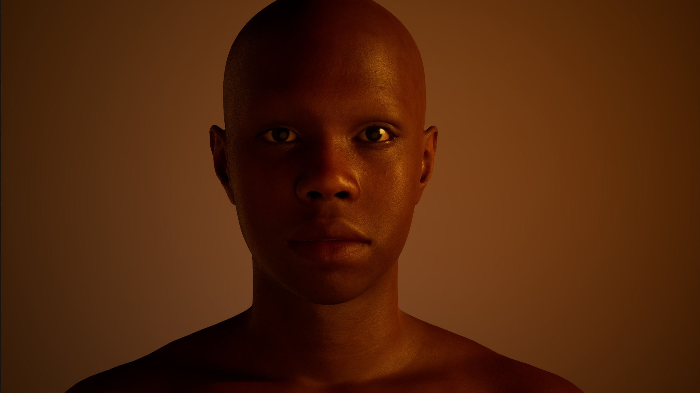

HARRIET
Back
HARRIET
Harriet experiments with both form and infrastructure by treating the archive as a performative, decentralized system rather than a static repository. Instead of presenting archival materials as fixed records, the project stages them as live, recombinatory events activated through voice, gesture, and spatial interaction.
This shifts the archive from an object of preservation to a process of continuous production. Harriet is a decentralized digital archive designed to preserve histories, cultural objects, and narratives which have historically been vulnerable to erasure. Building on my prior research, the project reimagines preservation through community-authored platforms and distributed information systems. Traditional, institutionally controlled archives have often limited access and perpetuated the loss of culturally significant materials. In response, Harriet employs decentralized information sharing methodologies to create a resilient, community-centered archival model. In the long term, it offers a replicable framework for marginalized communities to safeguard their own histories through decentralized preservation.
The technological systems used to build Harriet, including artificial intelligence, machine learning, motion capture, and real-time game engines, raise critical questions about data, authorship, and representation. Rather than treating AI as neutral infrastructure, the project interrogates how algorithmic systems reproduce archival bias, extract cultural knowledge, and reshape relationships between memory and computation. Harriet positions Black archival practice as a methodological corrective, exploring culturally informed datasets, community governance, and embodied interaction as interventions into dominant paradigms of AI training and digital preservation.
This shifts the archive from an object of preservation to a process of continuous production. Harriet is a decentralized digital archive designed to preserve histories, cultural objects, and narratives which have historically been vulnerable to erasure. Building on my prior research, the project reimagines preservation through community-authored platforms and distributed information systems. Traditional, institutionally controlled archives have often limited access and perpetuated the loss of culturally significant materials. In response, Harriet employs decentralized information sharing methodologies to create a resilient, community-centered archival model. In the long term, it offers a replicable framework for marginalized communities to safeguard their own histories through decentralized preservation.
The technological systems used to build Harriet, including artificial intelligence, machine learning, motion capture, and real-time game engines, raise critical questions about data, authorship, and representation. Rather than treating AI as neutral infrastructure, the project interrogates how algorithmic systems reproduce archival bias, extract cultural knowledge, and reshape relationships between memory and computation. Harriet positions Black archival practice as a methodological corrective, exploring culturally informed datasets, community governance, and embodied interaction as interventions into dominant paradigms of AI training and digital preservation.
Modeling: 3D Self Portraits
If the future is digital...
am I there?
The beginning of this work looked at digital recreations of self, exploring the limits and possibilities of technological tools which are built with inherent biases. Exploring the self definition and identity in the real, and examining personal, cultural, and physical dynamics and tensions in the digital. How might social rules and systems structures shift? Can oppressive systems be subverted, dismantled, or are they ever-present and reinforce. In the era of immersive digital media, 3D avatars are emerging as the new self-portrait. They are simultaneously intimate, performative, and mediated. Like a painting or a selfie, an avatar presents the self, but it also demands a radical unseeing. To see, one must step outside their physical presence, abstracted into code and geometry, to recognize the contours, gestures, and affective registers of identity. What makes me “me”? Do I want to imagine a “new” me? In 3D, the self is not fixed. Skin, form, and movement are modular, manipulable, and relational, offering a space to explore identity as constructed and mutable. The avatar archives memory, affect, and cultural narratives while staging the body as both absent and present. Creating and interacting with one’s digital double is not merely representation, it is a performative act of reflection.